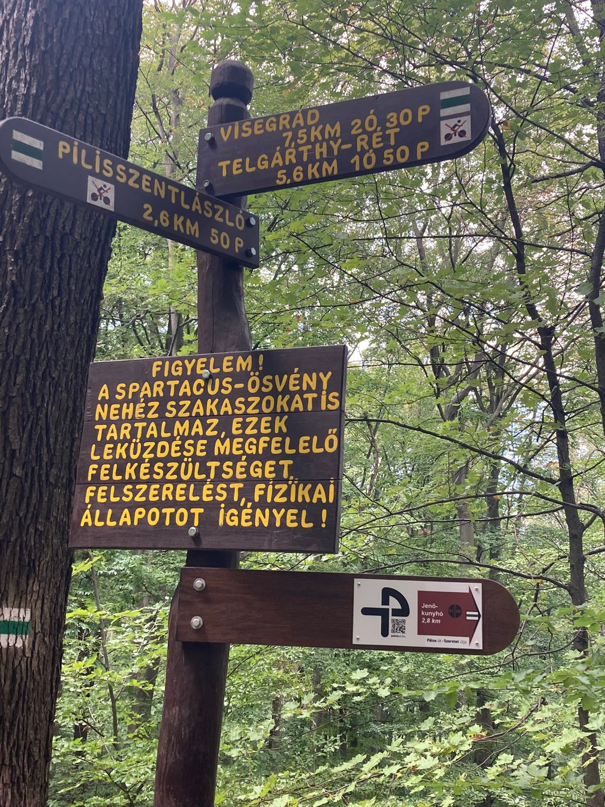
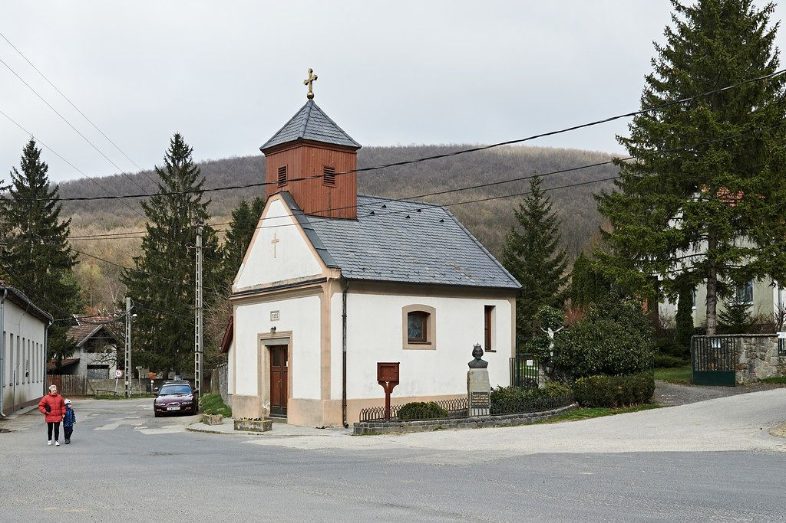

A Spartacus-ösvény túraútvonala

A Spartacus-ösvény a Visegrádi-hegységben található, és az egyik legszebb túraútvonal a környéken. Az út nagy része erdőben vezet, de több helyen gyönyörű kilátás nyílik a hegyekre.
Én már többször is végigjártam, és szerintem az egyik legjobb része, hogy nem egy teljesen egyforma erdei séta. Vannak szélesebb ösvények, de egészen keskeny, hegyoldalban vezető szakaszok is.
Honnan indul a túra?

A túrát például Pilisszentlászlóról lehet elkezdeni. Innen az útvonal erdei ösvényeken vezet tovább a Spartacus-ösvény felé.
Indulás előtt érdemes megnézni a turistajelzéseket és a térképet, mert több útvonal közül is lehet választani.
Milyen az útvonal?
A túra során többféle tereppel lehet találkozni. Vannak könnyebben járható részek, de olyan szakaszok is, ahol az ösvény keskeny és meredek hegyoldal mellett halad.
Szerintem pont ettől érdekes ez a hely, mert nem csak egy egyszerű erdei séta. Viszont eső után különösen oda kell figyelni, mert a talaj csúszóssá válhat.
Miért érdemes végigjárni?

Nekem az egyik kedvenc részem a gyönyörű kilátás és az erdő nyugalma. Több helyen is érdemes megállni egy kicsit, körülnézni vagy fényképezni.
Ha szereted a természetet és a változatos túraútvonalakat, szerintem ezt a helyet mindenképpen érdemes egyszer kipróbálni.